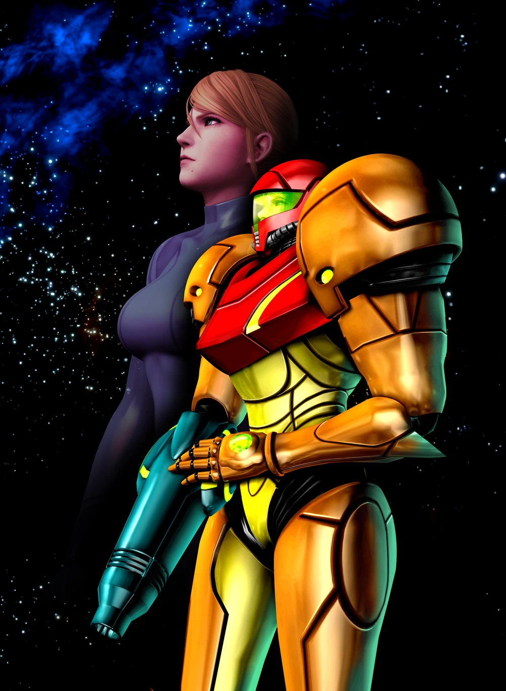
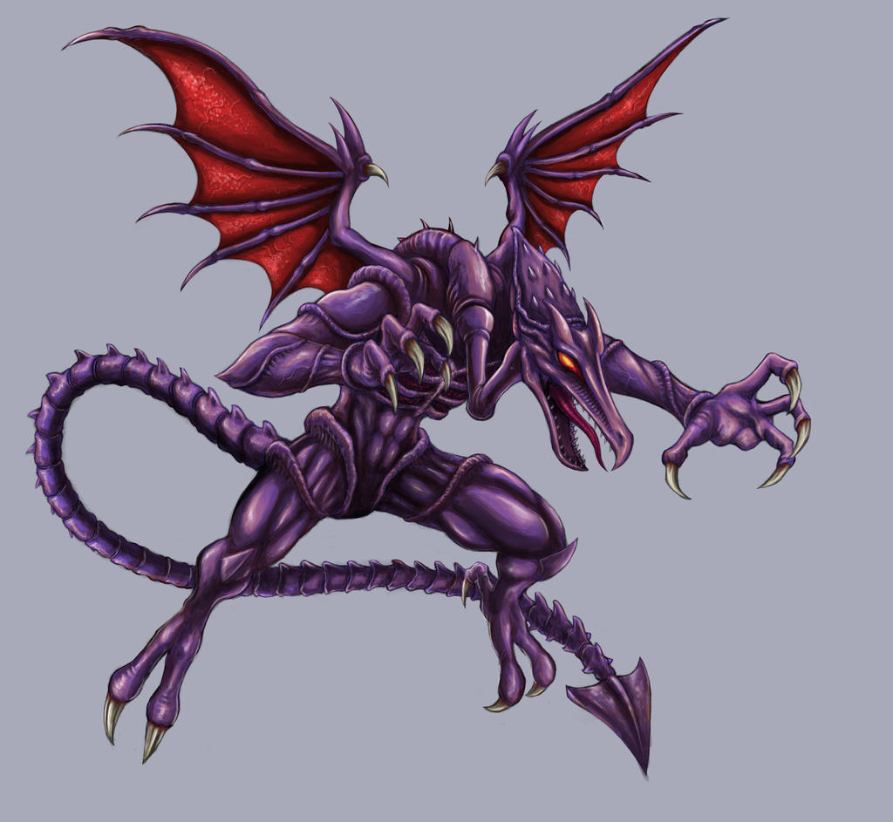
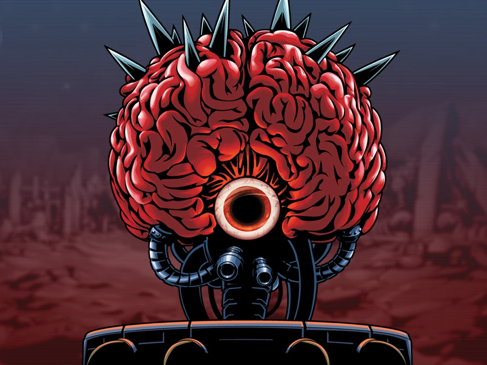
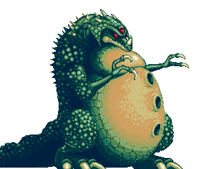
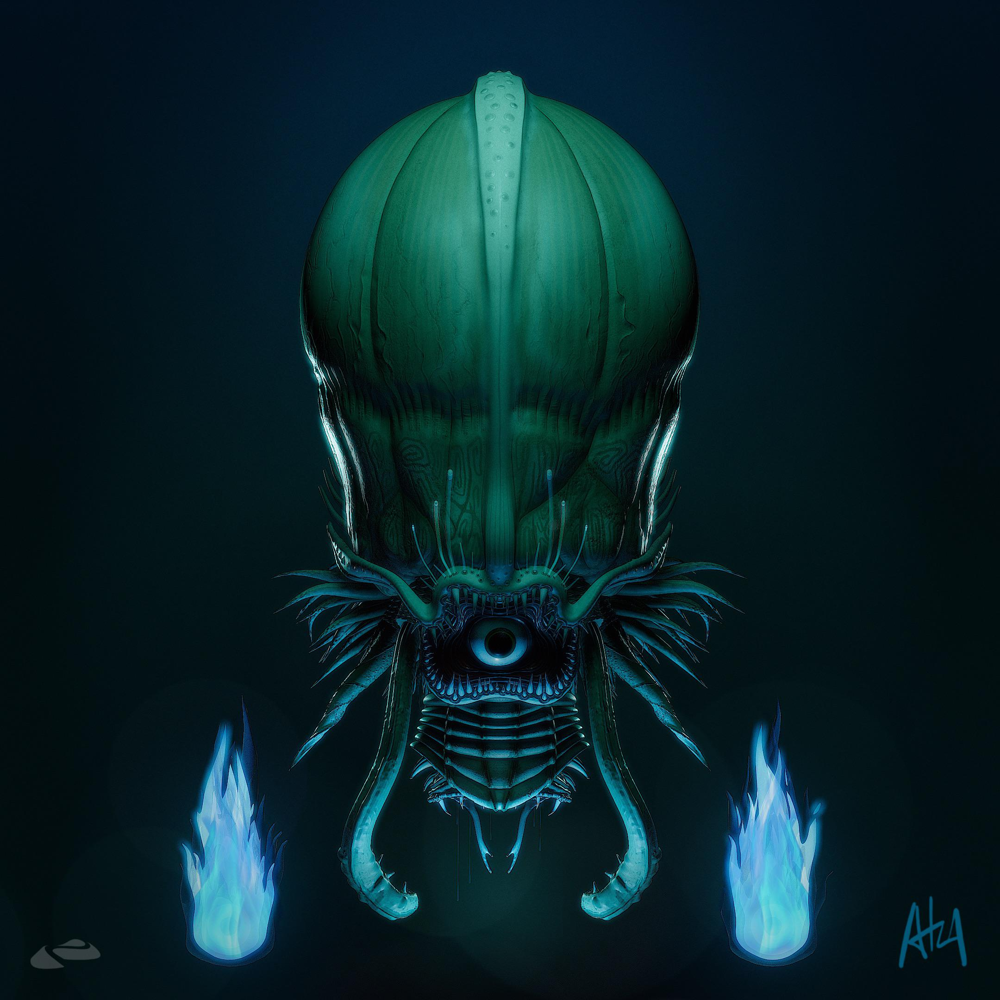
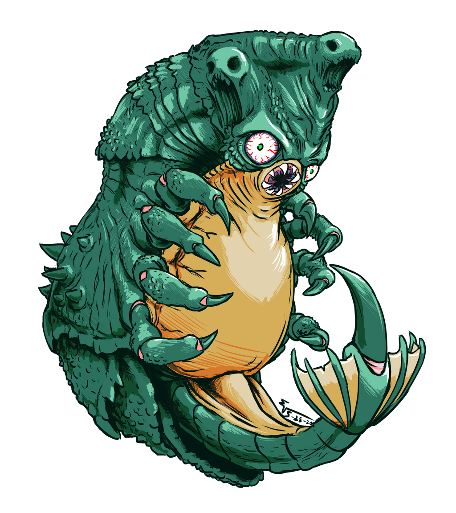

-
Samus Aran
Descrição
Samus Aran (サムス・アラン, Samusu Aran) é a personagem principal e protaganista da série Metroid. Apresentada ao público em 1986 no jogo Metroid, Samus é uma Human Bounty Hunter (caçadora de recompensas humana) famosa por cumprir missões aparentemente impossíveis.
-
Ridley
Descrição
Ridley (リドリー, Ridorii) é um personagem marcante na série de jogos Metroid. É o líder das tropas dos Space Pirates, liderados por Mother Brain. Ridley é particularmente conhecido por sempre retornar após suas derrotas contra a caçadora de recompensas, seja por suas habilidades de cura, clone ou aprimoramento robótico.
-
Mother Brain
Descrição
Mother Brain (マザー ブレイン, Maza Burein) é a antagonista e principal chefe da série Metroid. Ela é uma inteligência artificial fria e mal-humorada criada pelos Chozo, mas se voltou contra eles quando Ridley e os Space Pirates invadiram Zebes. Mother Brain viu potencial nos piratas e decidiu que com a ajuda deles, ela poderia trazer a verdadeira ordem para o universo de "repor tudo de volta ao zero".
-
Kraid
Descrição
Kraid (クレイドKureido ? ) é um corpulento extraterrestre reptiliano verde de três olhos da série Metroid . Ele é um Pirata Espacial e um dos maiores inimigos que Samus Aran já encontrou em suas missões, ocupando várias telas ao mesmo tempo. Ele é apresentado como um chefe em Metroid , seu remake Metroid: Zero Mission , Super Metroid e Metroid Dread .
-
Phantoon
Descrição
Phantoon (ファントゥーンFantūn ) é uma entidade espectral que é principalmente intangível e, portanto, invulnerável a qualquer forma de ataque, exceto por seu único olho. É este olho que, quando aberto, serve como sua conexão com o mundo corpóreo e pode ser danificado. Phantoon se assemelha a um cefalópode gigante com um único olho dentro de uma grande pálpebra em forma de boca.
-
Draygon
Descrição
O Draygon (ドレイゴンDoreigon ? ) é um grande chefe de Super Metroid . É uma espécie de crustáceo aquático , com uma casca externa dura e barriga mole. Parece ser um Evir totalmente desenvolvido e até tem alguns filhotes, que estão presentes na câmara em que ele habita. Ele é encontrado em sua própria câmara , uma das últimas salas acessíveis de Maridia .